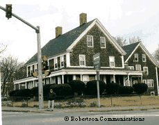

Walgreens withdraws Rockland project following TODAY Show appearance!
On June 17, 1999, Rockland's Walgreens battle was featured on the TODAY Show. Within hours after Katie Couric summed up the drugstore development issue with guest Richard Moe, President of the National Trust for Historic Preservation, by saying "so, in your view they are 'paving paradise to put up a parking lot,'" word came that Walgreens corporate executives had withdrawn the proposed development that threatened the Rockland Historic District. For the full report of the TODAY Show appearance, please click here.
NEWS: A proposed Walgreens drugstore site tops the 1999 list of the most endangered historic places in America, according to the National Trust for Historic Preservation. Drawing attention to "the corner of Main & Main," the new site development strategy of national drugstore chains, the National Trust has put a spotlight on Rockland, Massachusetts, and other historic sites threatened with demolition by developers working for the chains.
This is a national crisis for historic preservation in small towns: drug store corporations have changed their development plans from building in commercial developments at the edges of towns to siting new "big box" stores and parking lots on prominent corners in town centers. They have shown a disregard for existing historic buildings in acquiring new sites, and demolitions have included commercial buildings, a Beaux-Arts post office, and period houses. The National Trust for Historic Preservation has prepared a booklet on the drug store developments - see below.
Bird's Eye View of the Town of Rockland, Mass., 1881
Rockland Historic District is Highlighted
Proposed Walgreens location is circled in red
AT RISK:
Rockland Historic District, two buildings listed on the National Register of Historic Places, and one adjacent residence are threatened for demolition for a Walgreens. These buildings form the cornerstone of the historic district, and they include the Jenkins Lane house at 5 Union Street, built in 1840 by a prominent shoe manufacturer (and former state legislator), and the Richmond Lane House at 21 Union Street, built in 1874 by another shoe manufacturer and banker (both locations are in Rockland).
Such significant losses could jeopardize the status of the National Register district, and they would have a serious negative impact on the quality of the neighborhood and local property values.
|
 |
|
|
31 Union Street, abutter to the proposed Walgreens site, and 21 Union Street, the Richmond & Sarah Lane House, built in 1874, which is proposed to be demolished to be the location of the new Walgreens. Photo credit: Robertson Communications, Fred Robertson, copyright 1999. |
5 Union Street, Jenkins Lane House, built in 1840, which is proposed to be demolished to clear land for the parking lot and sign of the new Walgreens. Photo credit: Robertson Communications, Fred Robertson, copyright 1999. |
ALREADY LOST IN NEARBY TOWNS:
South Congregational Church in Brockton, dedicated in 1854, was torn down in 1993 for a Walgreens (this was by Leo Noonan, the same developer working for Walgreens on the Rockland project.) In an article by Marilyn Hancock in the Brockton Enterprise (March 13, 1993), she writes "The former South Congregational Church, whose future was hotly debated for two years, was the city's only federally registered landmark and was considered a cornerstone of the South Street Historic District in the Campello section of Brockton." As a concession to the community, the bell was retrieved from an architectural selvage dealer and mounted in front of the drugstore, along with a plaque commemorating the historic church.
Masonic Temple and two antique houses in Randolph, torn down in 1998 for a Walgreens.
AT ISSUE:
Developers for the drug store chains are paying above market rate for properties in high visibility locations. They have been successfully targeting historic properties to acquire large parcels in town centers. Two projects now under review will demolish significant buildings from National Historic Districts and build incompatible developments in their place.
The developers claim to be independent of the stores who are signing on to lease the locations, and spokespeople for the national corporations claim that there is no directive from their offices to target historic buildings or districts for demolition. However, the National Trust for Historic Preservation has noted this trend in New England and in other regions. Walgreens corporate web site lists criteria for development of new locations; it is a criteria drawn for suburban sites in the midwest and west that is incompatible to the historic character of New England town centers.
Contrary to the denial of corporate involvement, Leo Noonan, developer for the proposed Rockland Walgreens, stated in a public meeting February 17th, that "Walgreens looked at and turned down other sites in Rockland. This is the site where they [Walgreens real estate executives] thought they could be a success and a value to the town." In his own words, the Rockland National Historic District has been targeted by the corporation for demolition.
South Union Street, Rockland, Mass., Period View Proposed Walgreens site at the right.
PROJECT STATUS - ROCKLAND:
On February 17, 1999, the Rockland Zoning Board unanimously rejected the application for building the Walgreens development in a residential R-3 zone, under the guise of a by law permitting "neighborhood convenience stores" in the district. The developer claimed that other commercial uses were grandfathered into the current zoning and into the historic district setting a precedent that would permit their proposed use of the site, and they also requested a special permit for an oversized sign to be erected on the location. The developer also claimed that there was "no interest" in this area in a building of the architectural style of 21 Union Street (a French Second Empire residence), but he found an interested purchaser in Virginia willing to disassemble and relocate the building. He felt this would help preserve the historic integrity of the property. At this meeting it was noted that the "neighborhood convenience store" exception is allowed in all residentially zoned districts of Rockland, and if the precedent was set by Walgreens, then 15,000 square foot retail boxes with parking for 70 cars could be put on any residential street in town. Nearly 200 people turned out to oppose the Walgreens proposal at the February 17, 1999 zoning board meeting. Video tapes of this meeting are available. On March 19, 1999, the developer filed suit in District Court by the developer against the Rockland Zoning Board to overturn their ruling.
Robert Looney, the attorney for the developer, has argued that the zoning board's denial of their application "was error as a matter of law and fact and that the Board exceeded its authority" and that "the Board's decision was arbitrary and capricious." Mr. Looney, who is directing the suit against the Rockland Zoning Board, himself serves as an alternate on the East Bridgewater Zoning Board. His telephone number is: 781-878-6600. The legal suit against the Rockland Zoning Board was filed at District Court, Hingham Division (telephone 781-749-7000). Docket number 9958CV0207. The civil court clerk stated that they "don't get many of these at the court, honestly." The court hearing will be open to the public and media, but a date has not yet been set as of 04/7/99. The architect for Walgreens, Steven Moeser of Moeser & Associates Architects of Harvard, Mass., lives and works in a community known for having one of the strictest zoning regulations against commercial development in Massachusetts. His telephone number is: 978-456-6905. The developer is Leo Noonan, Susan Elleen Realty Trust, 727 N. Montello St., Brockton, MA. telephone: 508-588-7834. Walgreens Corporation is expanding with 400 new stores nationwide in 1999, with a goal of 3,000 stores by the year 2,000. Please express your concern about Walgreens corporate real estate expansion that puts historic buildings at risk to: Laurie Meyer, Director of Corporate Communications, Walgreen Co., 200 Wilmont Road, Deerfield, IL 60015 Telephone: 847-914-2925.
Lane's Corner, "Jenkins Lane Homestead", Rockland, Mass., Period
View
Proposed as the parking lot for new Walgreens.
Decision of the Rockland Zoning Board
South Union Street, Rockland, Mass., Period View
The proposed Walgreens will be on the site of the Richmond &
Sarah Lane House at the left, with a drive-up window approximately in
the same position as the side window on the house.
Other people to contact:
L. Daniel Jorndt, CEO
Walgreen Co., 200 Wilmont Road
Deerfield, Illinois 60015
David W. Bernauer, President and COO
Walgreen Co., 200 Wilmont Road
Deerfield, Illinois 60015
William A. Shiel, Senior Vice President - Facilities
Walgreen Co., 200 Wilmont Road
Deerfield, Illinois 60015
Mr. Thomas L. Bergseth, Director, Facilities Planning and
Design
Walgreen Co., 200 Wilmont Road
Deerfield, Illinois 60015
Link to Walgreens Web Site: Store Location Criteria: http://www.walgreens.com/comp/realest/realcritinfo.html
Real Estate Information: http://www.walgreens.com/comp/realest/realindex.html
Walgreens History: http://www.walgreens.com/hist/history.html
Preservation and Legislative Alert, "Drugstore Chains are Proliferating Across the Country" from the Pittsburgh History & Landmarks Foundation: http://www.phlf.com/phlfnews/alerts/9901123.html
Link to The National Trust for Historic Preservation Web Site: www.nationaltrust.org
Bibliography of information from The National Trust for Historic Preservation:
"Walgreens Drugstores and Communities" prepared by the National Trust for Historic Preservation, 1785 Massachusetts Avenue, NW, Washington, DC 20036
"When a Chain Drugstore Proposal Comes to Town" by Anne Stillman, available from the Northeast Regional Office, National Trust for Historic Preservation, Seven Faneuil Hall Marketplace, Boston, MA 02109 telephone: 617 523-0885
"Historic Preservation, forum news" (a newsletter of the National Trust for Historic Preservation) September/October 1998, Volume 5, Number 1, "Chain Drugstores on Main Street," by Anne Stillman.
"MainStreet News" (the monthly periodical of the National Main Street Center, a division of the National Trust for Historic Preservation November 1998, Number 148, "When Chain Drugstores Come to Town," by Anne Stillman, with additional writing by Linda Glisson.
"How Superstore Sprawl Can Harm Communities (And What Citizens Can Do About It)" by Constance Beaumont, National Trust for Historic Preservation, Information Series. 202 588-6296.
A New Historic Preservation Information Booklet is available:
"Better Models for Chain Drugstores"
"Over the past couple of years, chain drugstores have proliferated across the country. The large, single-story, characterless architecture and oversize parking lots have cropped up on America's beloved Main Streets, as developers bulldoze historic buildings that get in the way. Yet with the right planning and zoning regulations in place, some communities have successfully worked with corporate chains to integrate new drugstores into historic commercial districts. This new publication from the National Trust's Information series, "Better Models for Chain Drugstores," provides examples of drugstore projects from across the country that complement the historic character of the community.
"This booklet also suggests ways to implement preservation-friendly regulations that empower communities to work with the chains before the bulldozers come to town. Available Jan. 1999.
"The booklet costs $6.00 for individual copies including postage and handling. Discounts are available for bulk orders.
"For a complete catalog listing of other preservation titles, please call 202 588-6296 or visit our web site at www.InfoSeries.com." Look under "Check out our latest publications!" Infomation on ordering copies can be found on their web site.
Filed in District Court, Hingham Division
Docket Number 9958CV0207
Received Town Clerk's Office, Rockland, MA March 19, 1999
Susan Elleen Realty Trust, Leo Noonan, Trustee, Plaintiff
v.
Joseph Bouchard, Anton Materna, Peter McDermott, Robert Manzella, and Rita Howes, as members of the Rockland Zoning Board of Appeals, Defendants
1. The Plaintiff, pursuant to M.G.L. Ch. 40(A), Sec. 17, appeals the decision of the Zoning Board of Appeals of the Town of Rockland ("Board of Appeals") denying the Plaintiff's application for a special permit under M.G.L. Ch. 40(A) and the Rockland Zoning By Laws.
2. The Plaintiff, Susan Elleen Realty Trust, Leo Noonan, is a trust entity duly recorded with a usual place of business at 727 N. Montello Street, Brockton, Plymouth County, Massachusetts.
3. The Defendants are Joseph Bouchard, 191 Liberty Street, Rockland, MA., Anton Materna, 416 Market Street, Rockland, MA., Peter McDermott, 132 Higgins Rd., Rockland, MA., Robert Manzella, 21 Manzella Court, Rockland, MA., and Rita Howes, 390 North Avenue, Rockland, MA., all as members of the Rockland Zoning Board of Appeals.
4. The jurisdiction of this Court on this matter is derived from M.G.L. Ch. 40(A) Sec. 17.
5. The Plaintiff has duly executed the Purchase and Sale Agreements on the properties located at 5 Union Street, 21 Union Street, and 202 Market Street, Rockland, MA. Said properties make up the Locus in this matter.
See copy of Locus attached hereto and marked Exhibit A.
6. the Locus is located in an R-3 district which allows a neighborhood/convenience type commercial facility by special permit under Section IV. Permitted Uses of the Zoning By Laws.
7. The three parcels that make up the Locus currently have a residence (21 Union Street), a rest home (21 Union Street) [sic], and a vacant house (202 Market Street).
8. Directly abutting the locus is a single family dwellng [sic] on the Union Street side and a medical office, which had received a special permit, on the Market Street side.
9. Across the street from the Locus is a gas station, a plaza, a restaurant, and a multi/family dwelling.
10. The locus is approxiamtely [sic] 72,000 square feet. The proposed building is approximately 15,000 square feet. Union Street is a main street through downtown Rockland and Market Street is at that location, a state road known as Routes 123 and 139.
11. The Plaintiff filed a written application for a special permit and variance (regarding signs) under Sec. V(G)(5) and V(G) and Sec. IV. See copy of application attached hereto and marked Exhibit B.
12. In accordance with M.G.L. Ch. 40(A), the Board of Appeals held a public hearing on the Plaintiffs application on February 17, 1999. Said hearing was duly advertised and proper notice was given.
13. On February 17, 1999 the Board of Appeals voted 5-0 to deny the Plaintiffs application for a special permit.
14. On March 2, 1999 the decision was recorded in the the [sic] office of the Rockland Town Clerk. A certified copy of the decision is attached hereto and marked Exhibit "C".
15. The Plaintiff is a person aggrieved, within the meaning of M.G.L. Ch.
40(A) Sec. 17, by the decision of the Board.
16. The decision of the board to deny the Plaintiffs application exceeded the Board's authority and was arbitrary and capricious.
WHEREFORE, the plaintiff respectfully prays that the Court:
1. Hear all pertinent evidence and determine the facts.
2. Determine and adjudge that the Board of Appeals decision to deny the Plaintiffs [sic] application was error as a matter of law and fact and that the Board exceeded its authority.
3. The Board's decision was arbitrary and capricious.
4. Annul the decision of the Board of Appeals.
5. Grant such further relief as justice and the rights of parties may require.
Respectfully submitted,
Susan Elleen Realty Trust,
By its attorney,
Robert T. Looney, Esquire.
For Geogan & Geogan, P.C.
379 Union St., P.O. Box 313
Rockland, MA 02370
(781) 878-6600 Fax: 871-8786
Dated: March 19, 1999